它把 4 分半的 MV 变成 8 张这样的图
这是 dsh-video-storyboard 的工作原理：模型不用看几千帧，只看这几张拼图和一张时间表。下面用 Uptown Funk 把这个过程拆成 7 步。
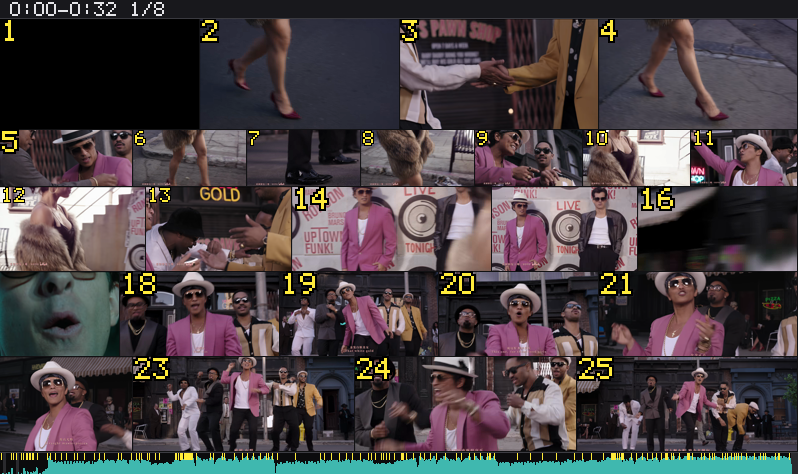
先把每一帧缩成 64×36 的小图
全片 6,742 帧都这样处理。这一步不是给人看的，只是为了后面比较时算得快。整条流程跑完这部片只用了约 60 秒。
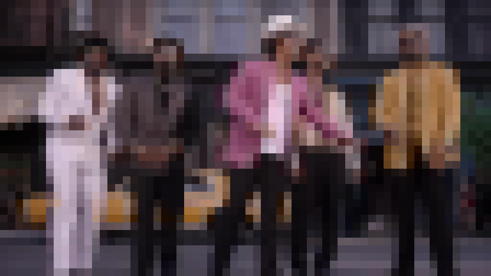
比相邻两帧，数有多少色块真的变了
上一帧的每个色块（黄色），都去下一帧它周围 5×5 的范围（青色）里找最像的，比的是色相、鲜艳度和亮度。找得到就算没变，找不到才算变了。分数 = 变了的比例 × 255，画面暗的时候再放大，最多 3 倍。
这样一来，镜头在动时内容只是挪到附近，不算变；真换了镜头才找不到。粉色就是找不到的色块：
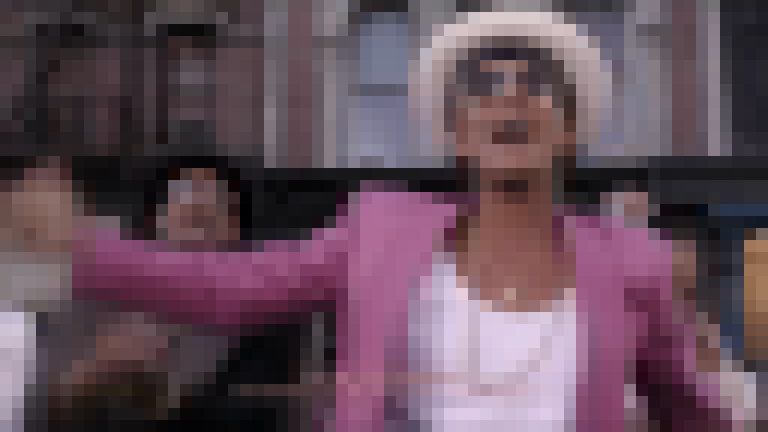
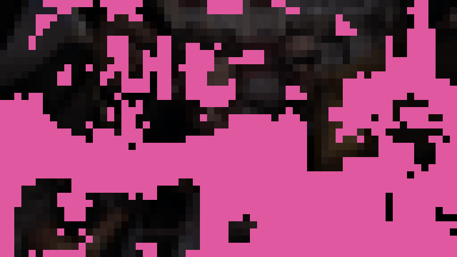
52% 的色块变了
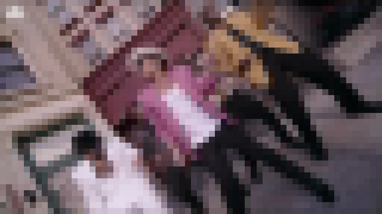
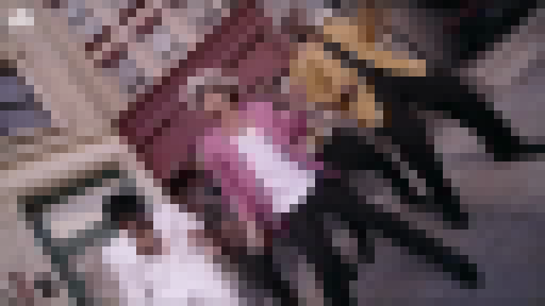
几乎没变，不算切点
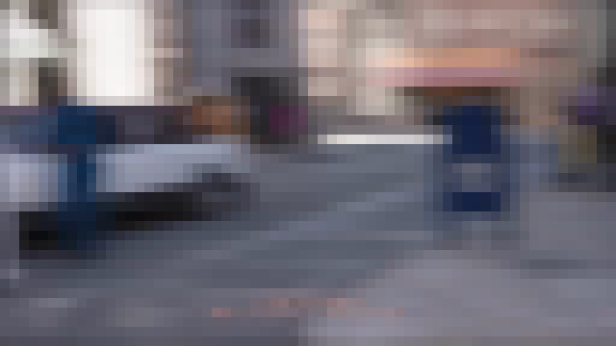
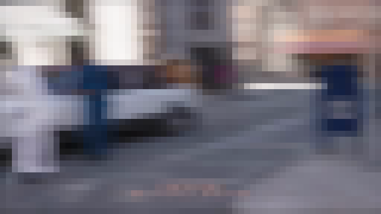
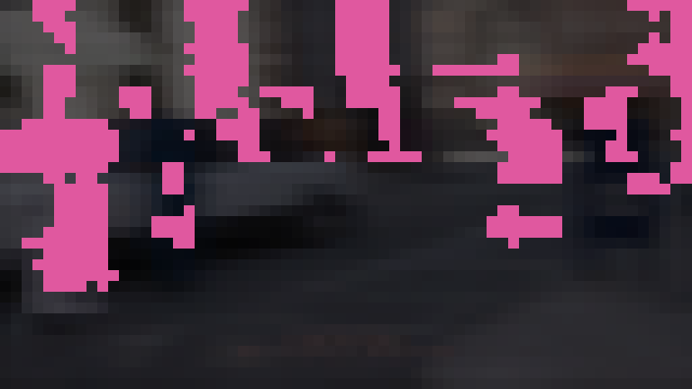
有变化，但不够高
分数过门槛，就算一个切点
门槛不是定死的：先按「大约 1.5 秒一刀」估一个，再按这部片平时的噪声定一条下限，在 80 到 150 之间。这部片噪声偏高，门槛顶到 150，最后找到 159 个切点。
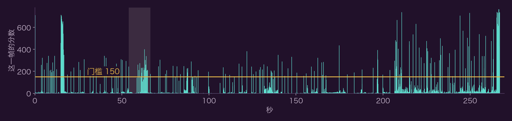
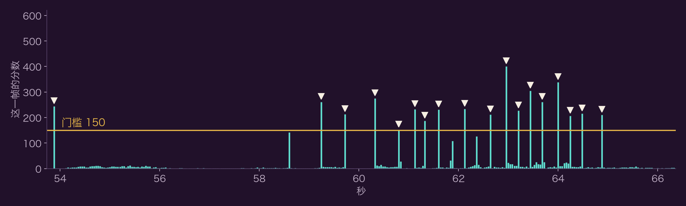
有些切点找到后还会打上标签（闪白、黑场、硬切、叠化、疑似运动），只标记，不删除。
画面一直在变的地方补采样点，然后每段取一帧
同一个镜头如果一直在动，一帧代表不了它。所以在切点之间把画面变化累加起来，攒够 600 分就补一个采样点（README 里叫「积分假切点」），然后清零重攒。这部片补了 42 个。
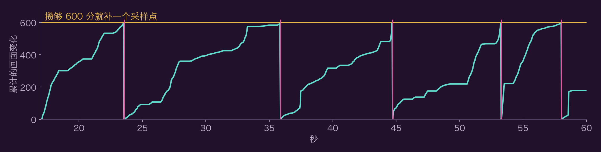
切点和采样点把全片切成一段段，每段默认取最中间那一帧，最后是 199 帧。比如下面相邻的两段：
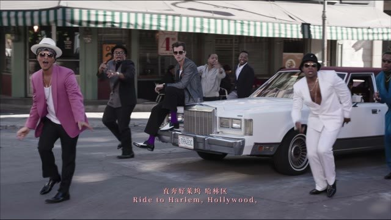
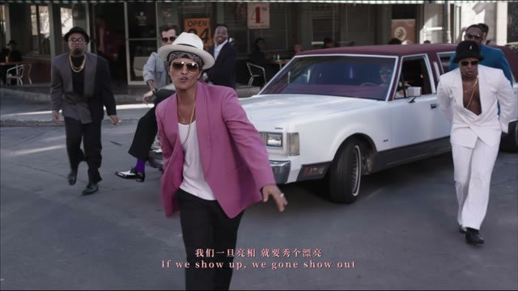
切得越密的地方，格子越小
每个位置都数一下附近 100 帧（4 秒）里有几个切点，平滑一下，再用 7 道线分成 8 档，第 k 档的边长就是整幅的 1/k。这是整个方法最有特点的一步：看一眼格子大小，就知道这里是长镜头还是快切。
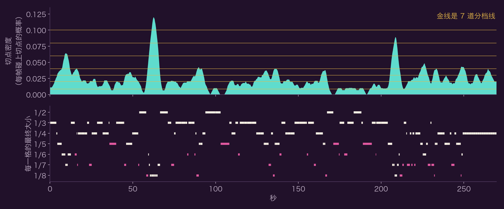
63 秒和 210 秒的尖峰就是快切，格子压到 1/8；1/2 的大格都落在切得少的地方。这部片还整体再小了一档，因为这样图最少。
按时间顺序排进画布，能少一张就少一张
格子的先后顺序不动，一行一行往里排，尺寸可以微调，尽量不留空。它会试三种大小方案，挑张数最少、最小格还认得出的那种。这部片选了最省的方案，画布用满 96.7%。
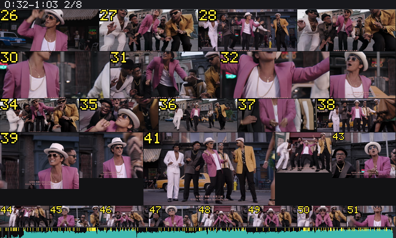
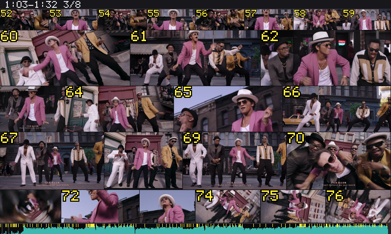
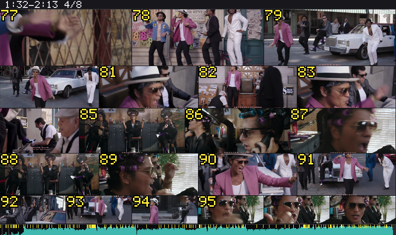
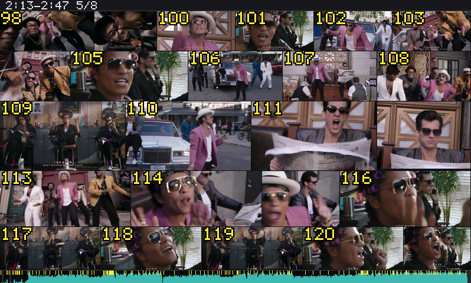
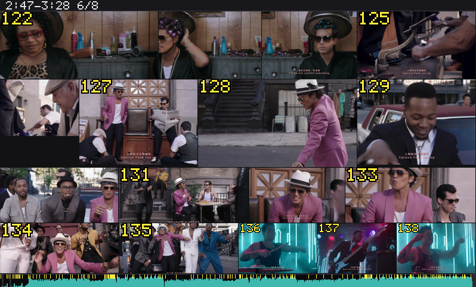
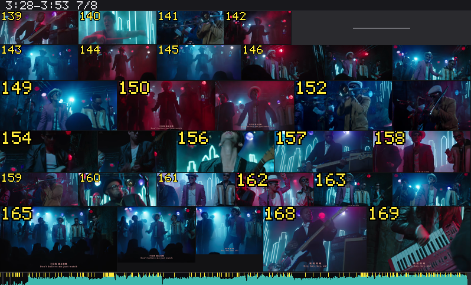
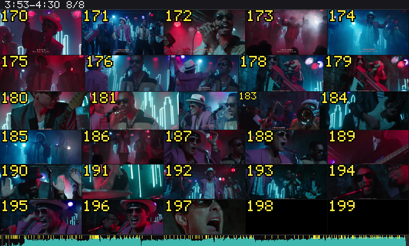
最后真的把这 199 帧从原片取出来，贴到各自的格子里。这就是整首歌的 8 张图。
烧上编号，加音频条，再配一张文字清单
模型数格子容易数错，读数字很准，所以编号直接烧进画面。底部的条和画面用同一条时间轴，青色是响度，黄色刻度是切点。
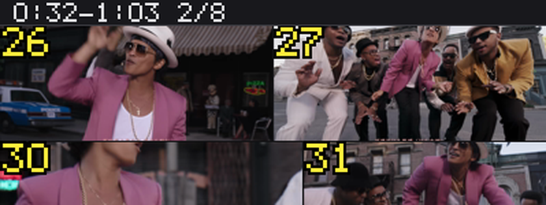
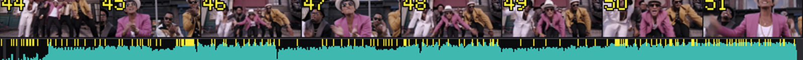
文字清单告诉模型每一格对应哪段时间。这个例子关了台词；开了字幕或语音识别的话，每一格还会带上那段时间说的话。
| 格 | 这一格代表的时间 | 取的是 | 大小 |
|---|---|---|---|
| 2 | 0.20–3.72 秒（切点） | 1.96 秒那一帧 | 1/3 |
| 5 | 5.40–6.96 秒（切点） | 6.18 秒那一帧 | 1/5 |
| 14 | 12.56–14.88 秒（切点） | 13.72 秒那一帧 | 1/3 |
| 29 | 35.88–39.96 秒（补采样点） | 37.92 秒那一帧 | 1/5 |
| 47 | 61.12–61.32 秒（切点） | 61.22 秒那一帧 | 1/8 |
示例画面取自 Mark Ronson ft. Bruno Mars《Uptown Funk》MV，版权归原权利人，这里只用来说明算法。第 6 步的 8 张图和第 7 步的编号、音频条都是工具（0.6.7）的真实输出。第 1–5 步的中间图按源码里的公式重算，分数分布（中位数 2.54、最高 765）、门槛 150 和图中的采样点都和工具输出对得上，切点数重算是 161 个，工具输出是 159 个。源码：github.com/SAOS-3624/dsh-video-storyboard